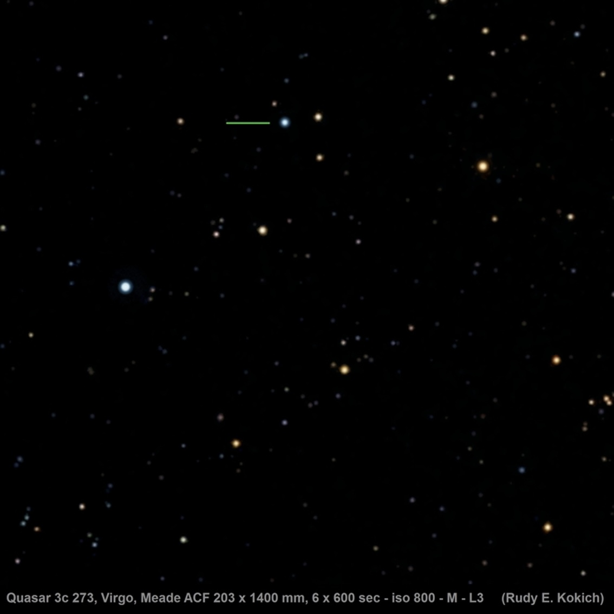
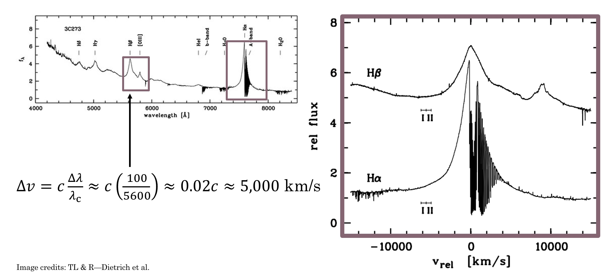
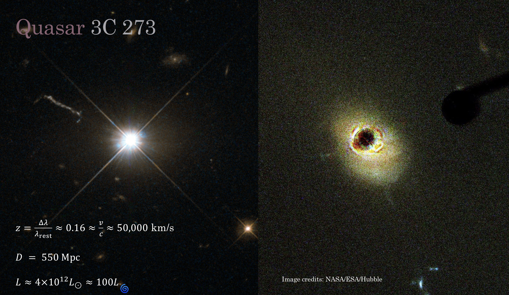
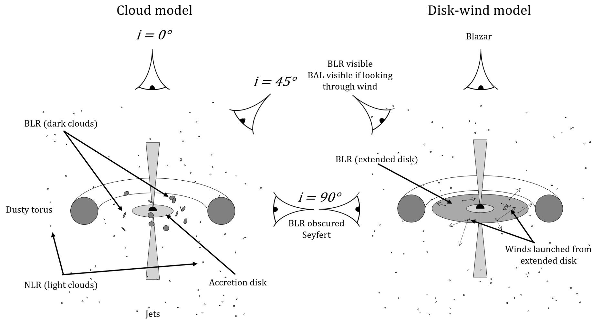
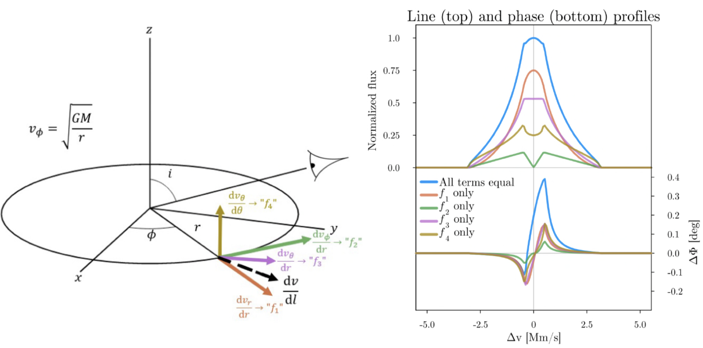
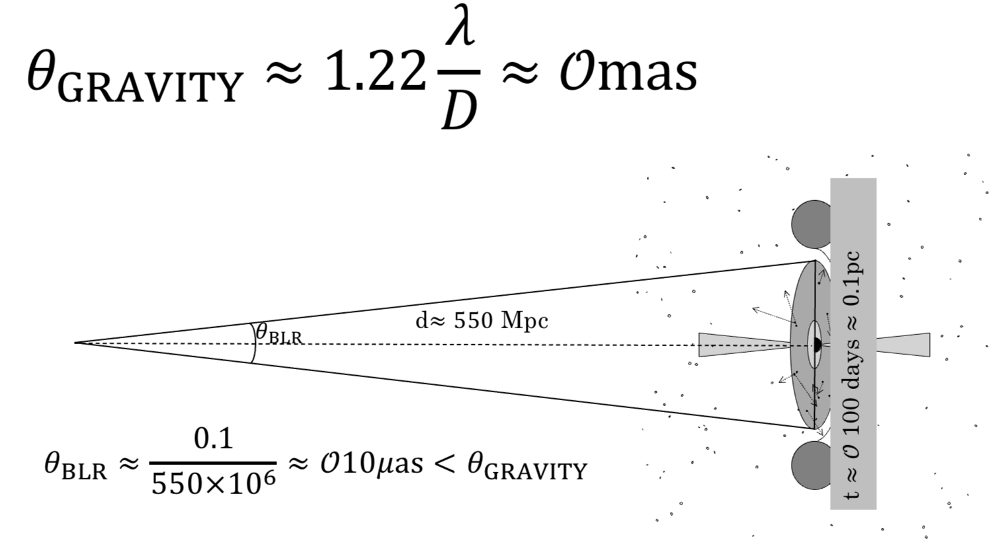
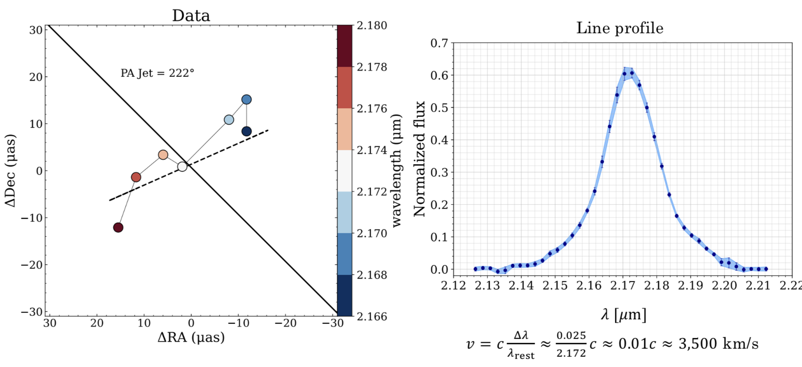
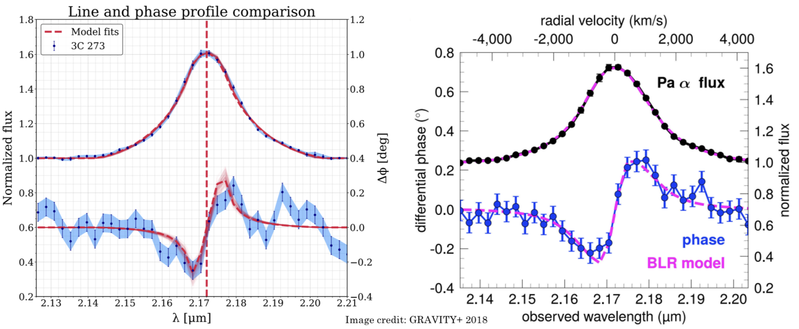

Artist's depiction of the main storyline in this work — which model (disk-wind, right, vs. clouds, left) best fits observational data of the broad-line region? Image credit: Steven Burrows, JILA
My first paper explained!
My first paper — "Confronting a Thin Disk-Wind Launching Mechanism of Broad-Line Emission in AGN with GRAVITY Observations of Quasar 3C 273" — has just been published in the Astrophysical Journal! This is a big milestone for me, and I'm excited to share it with you all. While the paper (with all the gory technical details) is available in its entirety here, this explainer is a plain-language summary of our results that tells the story of the project. I'll try to avoid jargon as much as possible and keep things at an accessible level for my family/friends who aren't astrophysicists.
As a first step, let's break down that awfully convoluted title. The layman translation of "Confronting a Thin Disk-Wind Launching Mechanism of Broad-Line Emission in AGN with GRAVITY Observations of Quasar 3C 273" is something like this:
- "Confronting a Thin-Disk Wind Launching Mechanism" → we tested a model (of a thin disk orbiting a black hole that is launching "winds" off of it) and applied it ("confronted") to some data.
- "of Broad-Line Emission in AGN" → our model can explain the broad spectral lines we observe in space around active galactic nuclei (AGN) — galaxies with supermassive black holes at their centers that are eating lots of stuff. More on the broad spectral lines below.
- "with GRAVITY Observations of Quasar 3C 273" → the data we applied our model to comes from an instrument called GRAVITY, which is part of the Very Large Telescope Interferometer (a bunch of big telescopes in the Andes whose light is combined to simulate an even bigger telescope). Specifically, we modelled data from the object 3C 273, which is a quasar (another fancy word for a very active supermassive black hole at the center of a galaxy).
We're going to work backwards through this title, starting first with what exactly a quasar is and how they were discovered.
The quasar I studied as part of this work is designated 3C 273, which is a pretty boring name but corresponds to some interesting history. The 3C represents the fact that this object was first found as part of the "third Cambridge" radio survey of the sky, and the 273 means it was the 273rd source found in that survey. But where does "quasar" come from? This survey that first detected 3C 273 was done in the late 1950s, and noted that it was one of the "loudest" radio sources in the sky. The early radio interferometer at Cambridge that found it had pretty limited resolution, however, so for a while we didn't know what this bright blob in the radio precisely corresponded to in visual light. The source was detected in the constellation of Virgo, which as you may know is one of the Zodiac constellations. All of the Zodiac constellations are aligned with the plane of the solar system, which we call the ecliptic, and this presented a unique opportunity to figure out what 3C 273 actually was. The moon also resides close to the ecliptic plane, and an astronomer named Cyril Hazard had the bright idea to take a bunch of radio data as the moon moved through Virgo — he hoped that the moon would travel in front of whatever 3C 273 was and thus block out the radio signal and allow astronomers to more precisely constrain its location.
The animation above showcases the idea, with the original large radio uncertainty in purple with the moon to scale. And it worked! Using the Parkes Radio Telescope in Australia (pictured top left) they saw the dip in the signal as the moon moved in front, which then allowed Maarten Schmidt to find it with an optical telescope (the 200 inch Hale telescope in California, pictured at bottom left). What they found suprised them — it appeared that what was making this incredible fuss in the radio was just a boring, dot that visually resembled the faint stars around it. This is where the name "quasar" originates — while we originally weren't sure what objects like 3C 273 were, we we knew they were "quasi-stellar" and had coincident "radio sources". Mash all that together and you get "quasar" for short. Below is an updated photo of 3C 273 taken by an amatuer astronomer, and indeed you can see it looks just like any other old star at first glance. 
They could tell it wasn't a star, however, because of its spectrum. If you aren't familiar, a spectrum is where we split incoming light up into all its component colors, allowing us to see how much light is present at each (very specific) color. We can use this to infer what something is made out of (different elements glow in different colors) as well as guess at what kind of object it is, as different objects have different characteristic spectra. The shape seen in the spectra from 3C 273 was unlike anything anyone had seen before, in particular because of its remarkably broad emission lines. The distinct colors that each element glows in correspond to what we call spectral lines. Usually these are spiky, narrow features, but in 3C 273 they were observed to be extremely broad, spanning much more of the color-space than they normally would.
This was the first hint about the true nature of 3C 273 — it told us that the gas that was emitting these spectral lines was likely moving very fast. While there are a few ways in physics for lines to broaden, none of the usual suspects could get anywhere close to how large 3C 273's broadening was. One such broadening mechanism is called Doppler broadening — like the Doppler effect — where random motions of the gas towards and away from the observer create a broader peak. Usually this kind of broadening happens because the gas is hot, as hotter things are moving around more and thus the smearing effect is larger. But here in 3C 273 the effect was so strong it couldn't be explained by temperature, and instead we needed another mechanism — gravity.  Above you can see that if we take the spectrum of 3C 273 and convert it into units of change in velocity (via the formula in the image) the width of the lines are thousands of km/s! Thus it was realized that the strong broadening observed in the lines was due to the fact that the gas emitting was orbiting something quite quickly. These speeds are roughly 1-2% the speed of light — you could travel from LA to NY in less than a second going this fast!
But this was only part of the mystery the spectrum contained. Initially when astronomers attempted to match the spectral lines seen to those that elements on Earth produced things weren't lining up. Eventually they realized this meant the entire spectrum was redshifted a significant amount. What is redshift? Objects moving away from us appear redder than objects moving towards us — analagous to how the pitch of an ambulance rushing by increases as it comes towards you then decreases as it speeds away. You may have heard that the universe is expanding, with galaxies on average moving further and further apart from each other as time goes on. This was first discovered by Edwin Hubble a few decades previously, and he showed that the faster something is moving away from us the further away it is in space (because greater distance = more time!). The redshift obtained from 3C 273's spectrum indicated that it was more than two billion light years away, making it one of the most distant known objects at the time. That's much farther than any of the stars surrounding it, and meant that in actuality its intrinsic brightness was 100x that of an average galaxy. This makes quasars the brightest sustained sources of light in the entire universe! Later observations found a giant jet shooting off from the center (we now know much of the radio emission is associated with this feature) and revealed that it was actually an extrememly bright center to a galaxy, as the Hubble image on the right below shows. 
Combined, all these bits of evidence led astronomers to believe that 3C 273 was actually a supermassive black hole at the center of a galaxy more than two billion light years away. These are violent and highly variable (on universal timescales anyways) objects that are witness to some of the most extreme physics in the entire universe.
The most important characteristic for any black hole is its mass, but just how massive is the black hole in 3C 273? And how do you weigh a black hole more than a billion light years away? We can estimate the mass of the black hole at the heart of 3C 273 using the speeds measured from the broadened spectral lines in conjunction with an estimate for how far away the emitting gas is from the black hole. From Newton's/Kepler's laws we know that the speed at which you orbit a massive body is related to both how far away you are from it and how massive that central body is. In our solar system, for example, Mercury orbits much faster than Pluto because it's much closer to the Sun, and if you were to increase the mass of the Sun they would both have to speed up to avoid changing their orbits. Even though 3C 273 is a supermassive black hole much more massive than our Sun, the same basic rules of physics apply to the gas orbiting it producing those crazy broad spectral lines as they are far enough away from the black hole that we can neglect relativity.
While we can estimate the speed from the width of the spectral lines, estimating the distance the gas is to the black hole is a little trickier. One way to do this is with a technique called reverberation mapping, where (as shown in the animation from NASA/JPL-Caltech below) you carefully watch for how long it takes variations in the gas that's creating the emission lines to respond to changes in the overall brightness of the quasar. This time delay between when the black hole "burps" and when the emission lines respond can give you a crude distance estimate for where the gas creating the emission lines is with respect to the black hole, and we call this the "broad-line region" (BLR).
Even the closest quasars are too far away for us to directly see what's happening close to the black hole where the broad-line region is, so all we've really been able to do is look at the shape of the emission lines and roughly estimate how far away they are by measuring time delays using reverberation mapping. Previous results estimate the mass of the central supermassive black hole to be roughly 10 million times the mass of our Sun, but to really precisely nail this number down you have to model the broad-line region.
So how do we model the BLR then? Well, the broad emission lines we see generally have one peak — this is really important! If you imagine a black hole in your head you probably have some kind of picture that there's this crazy dark thing in the center surrounded by a turbulent disk (think the Interstellar black hole) of hot gas and dust that the black hole is eating. Just as water going down your drain flattens out into a whirpool shape astrophysicists belive there is a central accretion disk that black holes feed of off. But how far out does this disk extend? Is the gas in the broad-line region a disk? While it seems like the simplest answer is to just make everything a big disk, it turns out it's hard to get a single peak in a spectral line if you have a disk — and that's a problem because we only see one peak! If you use a simple disk (whose inner and outer radii are not widly far apart) emitting the same way in every place you actually get two peaks. This is a problem because if you remember our spectrum from up above we definitely don't see two peaks.
Let's go through a quick thought experiment to see why this is, and how different velocity fields can affect the line profile we observe. First, let's start with a sphere of gas (like a star!) that's not spinning at all, with a nice narrow line profile with a single peak. If we spin up this ball of gas we see the line gets broader, but there's still just one peak. This happens because the left half of the ball is spinning towards us (which shifts its light a little bluer) and the right half away from us (a little redder), making the line broader, but most of the emission is still coming from the center of the gas ball (which is moving across the screen and thus not towards or away from us).
That first bit assumed we were looking "edge-on", which may not be the case. Let's tilt our gas sphere away from us, such that we go from looking at it at the equator to looking down the pole and see what happens. We notice that the line profile goes back to how it was before! This is because when we look straight down at the spinning ball no part of it is spinning towards or away from us, so the line profile goes back to its narrow original form.
Okay, so spinning spheres of gas (like stars) can make lines broader, but this paper is about disks, so let's cut out a hole in our sphere of gas to turn it into a record player style disk, and let's tilt it back down until we're looking almost edge on (75 degrees). Here we start to see the problem — there's two peaks starting to form! The blue peak is from the part spinning towards us and the red from the part spinning away from us, with the dip in the middle caused by the fact that we punched a giant hole in our gas ball to make the disk.
But real things in space don't orbit akin to a record player — as we talked about before Newton's/Kepler's laws tell us that the inner parts of the disk should be spinning much faster than the outer parts of the disk. Let's make our disk obey these laws, pretending that there's some massive object at the center of the cutout causing everything to spin around it, and let's watch what happens as we increase its mass, as we need to get the stuff spinning much faster than it is currently! You'll notice that at the end of this we have two very disparate peaks, and this doesn't at all look like the line profile shown in our spectrum above. So does this mean the broad-line region can't be a disk? Paper over? Not quite...
This is the crux of the problem I've tried to answer with this paper. Generally it's assumed that the broad-line region is not a disk in part because of this problem, but instead a distribution of puffed up "clouds" of gas that orbit the black hole more randomly (instead of just in one plane like the disk). This makes them a better analog to the sphere of gas first shown in the animation above and means they can reproduce the line profile without any of this double peak nonsense. While it has that going for it, it's much less physically intuitive — how do you get a bunch of clouds up there, and how do you get them to survive for a meaningful amount of time? Wouldn't it just be so nice if everything were a nice ordered disk? Determining which model best fits the BLR is important because the model you choose affects the mass you get for the black hole!
While the cloud model is the standard one used today, in the late 90s authors Chiang and Murray proposed an alternative method for obtaining the single peak in the broad-line profile using a thin disk with just one extra assumption. The key to making their model work is that their thin disk doesn't emit isotropically (like we showed in the simple animations above). But why wouldn't all the hot gas glow the same way everywhere in the disk? It turns out that if the disk is quite opaque (aka "optically thick" in physics words) and moving quite quickly, when the hot gas tries to emit its light sometimes gets trapped in the disk itself! In this regime we can use a technique called the Sobolev approximation to solve for how the disk should emit, and in this limit the probability that a photon will escape from any given location in the disk depends on how much shearing there is in the disk at that location.
What are these shears? One example is shown in our simple toy-model animation from above — Keplerian shear. Since the inner parts of the disk are orbiting faster than the outer parts of the disk, the different "rings" of the disk will rub against each other and create a shear because of this velocity gradient. The idea in the Sobolev approximation is that the gas is always emitting, but usually that emission just bounces around inside the disk if it's all moving at the same velocity. The only place where the radiation can escape is where there's a large jump in velocities — which happens because of shearing — and thus the places where the shears are highest have the greatest chance of letting out lots of photons. Chiang and Murray showed that, using this approximation and a lot of fluid math (to calculate the shears in the disk), you can end up with a scenario where it's much more likely for photons to be emitted from the front/back of the disk than the sides. This is important because the front and back of the disk aren't moving towards or away from us, thus by letting more light out there you can fill in the region between the two peaks!
Specifically, they showed if you have an orbiting fluid-like thin disk and introduce a radial velocity shear (i.e. stuff flowing out of the disk along the plane of the disk), you can get the single peak you need to match observations. We took their model as a starting point and added our own custom flair on it, checking a few other possible shears in the fluid (like what if stuf was flowing up off of the disk?) to see how these would affect the results. This model is a simple disk-wind model, because even though we aren't actually modelling a "wind" being blown off the disk those velocity shears could give rise to winds, as shown in the image below.  This shematic of the broad-line region (BLR) shows the difference between the standard cloud model (left) and our disk-wind model (right) put into context with the assumed anatomy of an active galactic nucleus.
We let the "wind" in our model start as four possible terms: blowing outwards radially, shearing as a result of inner parts of the disk spinning faster than outer parts (Keplerian shear), blowing out and lifting up off the disk, and blowing up off of the disk. We picked these for math reasons (see the full paper if curious). The effects of each of these terms (labelled 1 through 4) on the shape of the line profile is shown below, with many different shapes possible through their combination.  Astute readers will notice that the "f₄" (yellow) line profile looks a lot like what we saw in our example from before — that's because it represents a form of isotropic emission! Ignore the "phase" profile here for a moment — we'll come back to that in a second. There are similar models to this that have been robustly explored by Murray and Chiang as well as Flohic et al. and Chajet and Hall (who used electromagnetic shears instead of fluid shears), but none had yet been fit to GRAVITY data. For a long time there wasn't really a good way to test the cloud and disk-wind models head to head, and for whatever reason the cloud model won out as the de facto model. But with exciting new data from the GRAVITY instrument we had a new opportunity to try to pit these kinds of models against each other and better understand the underlying physics of the broad-line region — and that's exactly what we did for this paper!
But what new observations did we have that we fit to? This is where that "phase" profile comes in. We've known what the line profiles look like for a long time, but what's new with GRAVITY is that we can actually (just barely) start to spatially resolve the emission, which (in physics terms) allows us to observe a "phase" profile in addition to the line profile.
GRAVITY is an instrument that essentially combines the set of Very Large Telescopes up in the high Chilean desert into one giant super-telescope. The bigger the telescope the finer the details you can see, so by combining the light from all four of these telescopes we can see things that are much smaller than we could with just one of them. The resolution of GRAVITY is much better than Hubble or even JWST, making it uniquely suited for this kind of study. Even with this remarkable resolving power, however, it turns out that the broad-line region of 3C 273 is still too close to the black hole for us to just snap a photo.  The size at which GRAVITY can fully resolve is on the order of milliarcseconds (1 milliarsecond resolution roughly corresponds to being able to see a small house on the surface of the moon) but the inferred size of the BLR in 3C 273 is 100 times smaller (more like seeing a donut on the moon). While we can't take a picture of the BLR because of this, it turns out that this is close enough that we can still resolve some detail.
To illustrate what we can still do, let's do some image processing on this photo of my ex's adorable dog Spud (we were together when I wrote this...and it's not his fault we broke up + he demonstrates the point well + he is really cute so I am leaving it). We're going to calculate the centroid of this photo in three different colors (red, green, and blue) — this shows where the "average" position for each color is in the picture. We would expect that the red and blue average positions should be substantially different, for example, because the predominant source of red is the Kayak Spud is lounging in (more towards the bottom left of the photo) while the primary source of blue is the sky/water (more intense in the upper portion of the image). We're going to add one other twist though — we're going to make the image progressively blurrier and blurrier until we can't tell what the photo originally was and watch what happens to the centroids. The overall image centroid is the large X, while the color dependent centroids are shown as red, blue, and green dots. Notice that even though by the end we can't tell what the original image was we see that the centroids are still roughly in the same place they were before we did any blurring! This is the key idea we use with GRAVITY — although we can't make a picture, we can see how the center of the image changes depending on what color we look through and look for patterns that we think could be caused by the underlying physical structure.
When this was done on 3C 273 with GRAVITY we noticed that there's a significant difference between where these colors are located as we go from redder to bluer! In particular, it's very cool to see that the redder channels are all on one side of the jet while the bluer colors are all on the right. This is significant because it implies some kind of ordered rotation (think back to those animations of spinning disks/spheres of gas from above) is happening in the broad-line region.  The image above shows the data we get from the telescopes. The black line represents the orientation of the jet, and the red and blue dots the positions of the various color channels. If the disk model is correct this would imply that the right side of the disk is moving towards us and the left away from us. The cloud model can also explain this picture (imagine just a bit more random motion in one direction vs. the other), but with this new data we can now fit for two things — the offsets of the color positions and the overall shape of the line profile as seen in the right panel, giving us a new way to better distinguish between them.
After doing some fancy fitting of our model to the data on CU Boulder's supercomputer, we found that this kind of disk-wind model could fit the data, and it even looked like it could fit it just as well as the cloud model did! The image below shows a comparison of our fit to the data (the "phase" profile shown here is essentially just a different way of showing that red-blue asymmetry we saw in the graphic above) vs. a previous paper that showed a fit using the cloud model, and statistically we see that they are similarly good fits to the data.  But if both fit the data equally well, how can we tell which model is right?
One of the parameters both models fit for is the inclination angle — how tilted the 3C 273 system is with respect to us. From observations of the jet we think we know that the inclination is between 10 and 20 degrees, and the cloud model fit prefers this number as well. The disk-wind model, however, prefers inclinations that are much higher, closer to 90 degrees. This is because the "f₁" term (the radial velocity outflow) is strongest when the disk is edge-on, and it's this term that's most important to replicating the single peak we see in the line profile. This means that the cloud model is likely the better model (between the two) for explaining 3C 273. There's a few other pieces of evidence that we discuss in the paper that further disfavor the disk-wind model, but this inclination issue is the main one. 3C 273 was a great system to try this experiment with in part because we think we know this inclination angle, which we don't know for many systems, and that extra bit of info is what allows us to set the models apart. Note also that this doesn't mean all disk-wind models are ruled out — some other version of this model or further modifications could reconcile this difference, which we should try to test, but overall I'm skeptical that anything will be able to explain the data as well as the cloud model does.
While this negative result is perhaps not as exciting as if we were to upend decades of broad-line region research, it is an important check that we've done to ensure we can trust all of that existing research even more. In reality that's most of science — testing and testing and testing to rule everything else out, and I've had a great time doing it! This kind of work is critical for accurately weighing supermassive black holes, as many surveys automatically calculate quasar masses assuming a version of the cloud model, while we don't necessarily know that the cloud picture is fully correct or what errors are introduced by assuming it. For example, if the disk-wind scenario were right for 3C 273 it would imply the black hole be 2-5 times less massive than previous results indicated, and that's a pretty big model-dependent uncertainty!
What's next? For one, we should check other flavors of the disk-wind model to see if they can reconcile this inclination discrepancy (though I am skeptical). But I'm even more interested in applying this kind of model to a different kind of data — in this work we joint fit our model to line profile data and phase data for one object, and we were able to rule it out in large part thanks to the independent inclination measurement. But that's just one object, and what if this kind of model actually works better for lots of other objects? While we don't have GRAVITY data for lots of quasars, we do have reverberation mapping (that time delay thing) data for a lot of other sources, so I'm excited to see how this model performs with that kind of data. Will it also be disfavored for other objects, making the cloud model the definitive answer? Or will some objects prefer a disk-wind type model? We'll see where the science takes me!